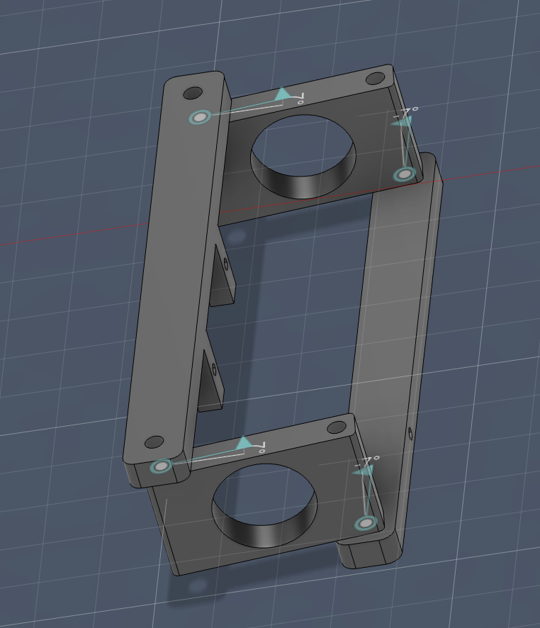
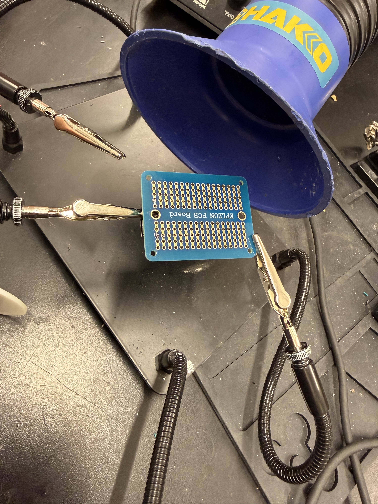
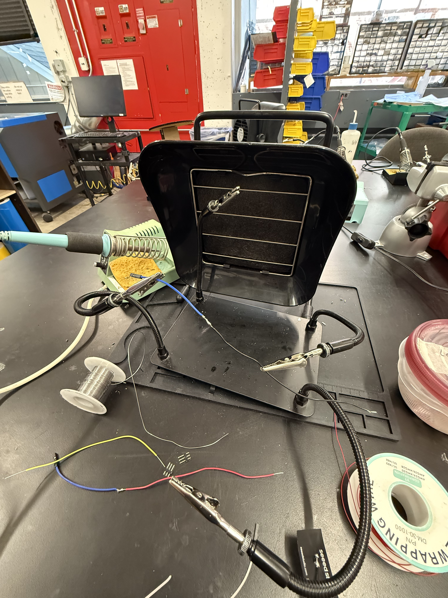
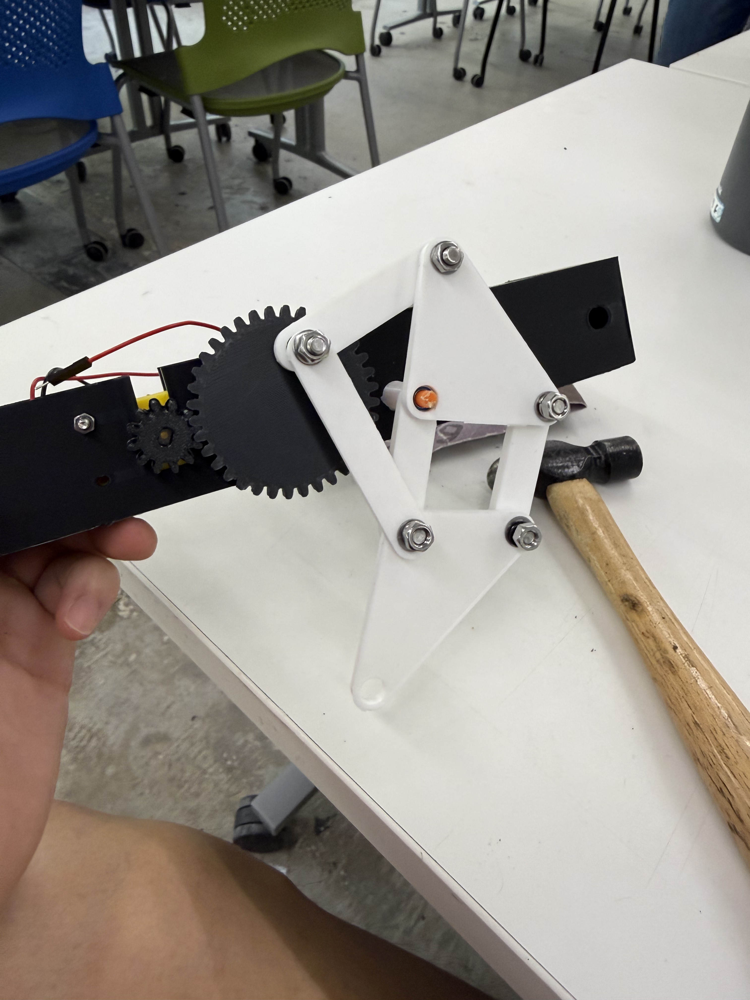
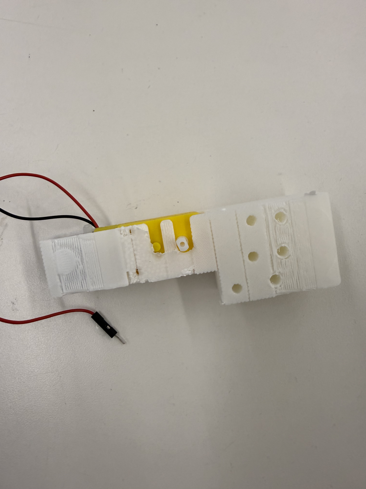
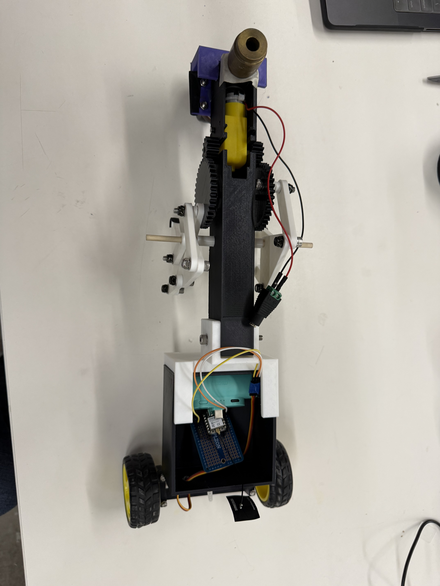
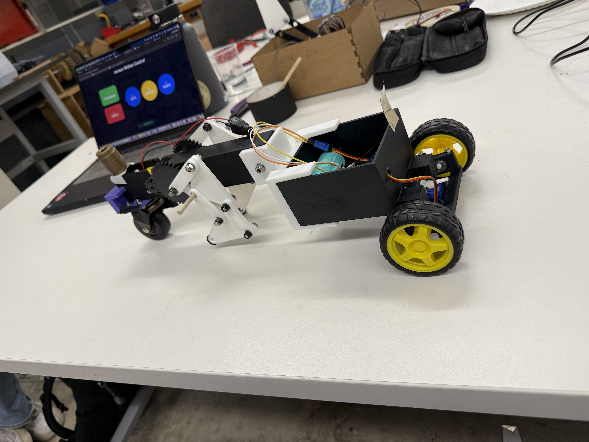

<div class="textcontainer">
<p class="margin"></p>
<h3 style="text-align: left;">Final Project: Ja(nsen)cob Walker</h3>
<p style="text-align: left;">The goal is to make a walker robot, similar to a starwars ATAT. The moment I started trying to replicate the ATAT, the more I found that it was poorly designed...
The long legs and small body meant that the ATAT was very unstable. Its walking motion is also very impractical (in the movies only one leg moves at a time).</p>
<h4 style="text-align: left;">Iteration 1: MVP</h4>
<p style="text-align: left;">For my MVP I wanted to demonstrate the basic walking mechanism of the robot. I wanted to use the Jansen linkage and pair it with ATAT feet rather than the regular pointed "spider feet" that the Jansen linkage/Strandbeest uses.</p>
<div style="display: flex; gap: 20px; justify-content: center; flex-wrap: wrap;">
<div>
<p style="text-align: center;"><b>My version with feet</b></p>
<img src="./images/stand.jpg" width="350px">
</div>
<div>
<p style="text-align: center;"><b>Strandbeest</b></p>
<img src="./images/strandbeestgif.gif" width="350px">
</div>
</div>
<div style="display: flex; justify-content: center;">
<video width="400px" controls style="margin: 20px 0;">
<source src="./videos/v1fail.MOV" type="video/mp4">
</video>
</div>
<p style="text-align: left;"><b>Failures & Iterations:</b> The initial linkages did not work. The nuts kept falling off. Needed to replace them with lock nuts and washers! Also finding the correct speed to make the linkages "walk" at was a bit difficult. Im beginning to realise that coordinating walking motion for front and back legs will be rather difficult.</p>
<h4 style="text-align: left;">Iteration 2: MVP</h4>
<div style="display: flex; justify-content: center;">
<video width="400px" controls style="margin: 20px 0;">
<source src="./videos/v2better.MOV" type="video/mp4">
</video>
</div>
<p style="text-align: left;"><b>Improvements:</b> In this second iteration, I used lock washers and nuts. They worked really well.</p>
<h4 style="text-align: left;">Other Trials & Experiments</h4>
<p style="text-align: left;"><b>Trial 1:</b> Making a sort of wheelbarrow extension for stability</p>
<p style="text-align: left;">The wheelbarrow design was a failure. It did not provide the stability I was hoping for. Also I failed to consider where the wheelbarrow leg needed to be secured in order for it to roll properly. The wheelbarrow leg itself shouldn't move but in my first design it could rotate. I needed to drill holes into it and secure it with some screws.
When I finally stabilized the wheelbarrow leg and connected the motor to power, my 3D printed axle snapped. It could not handle the torque of the motor. I need to design a new axle that is stronger.
</p>
<div style="display:flex; justify-content:center; gap:20px; flex-wrap:wrap; margin-top:30px; margin-bottom:40px;">
<img class="tv-frame" src="./images/wheelbarrow 1.jpg" alt="wheelbarrow 1" style="width:300px; height:300px;">
<img class="tv-frame" src="./images/wheelbarrow leg.jpg" alt="wheelbarrow leg" style="width:300px; height:300px;">
</div>
<div style="display:flex; justify-content:center; gap:20px; flex-wrap:wrap; margin-top:30px; margin-bottom:40px;">
<img class="tv-frame" src="./images/broken axle.jpg" alt="broken wheelbarrow" style="width:300px; height:300px;">
</div>
<p style="text-align: left;"><b>Trial 2:</b> Trying a sled instead of a wheelbarrow</p>
<p style="text-align: left;">The sled configuration was definitely much more stable. The system could stand on its own. Next, I need to work on connecting a battery to the walker instead of using the power supply.
I might also have to change the motor to something more powerful. When I was doing some testing the leg walking motion was clearly working when I suspended the linkages in air
but the moment I put it down on the ground it struggled to walk. This means I need to work on reducing friction with the floor too.
</p>
<div style="display: flex; justify-content: center;">
<video width="400px" controls style="margin: 20px 0;">
<source src="./videos/v2sled.MOV" type="video/mp4">
</video>
</div>
<p style="text-align: left;"><b>FEEDBACK FROM MVP DAY</b></p>
<ul style="text-align: left;">
<li>Wheels (possibly include servos to control directionality) - the ATAT would turn into a wheelbarrow toy. 2 sets of Jansen linkages are quite unstable
given the narrow body of the walker.
</li>
<li>Use ball bearings to improve stability.</li>
<li>Consider using a more powerful motor.</li>
</ul>
<h4 style="text-align: left;">Next Steps as of May 1 2026</h4>
<p style="text-align: left;">Priorities moving forward:</p>
<ul style="text-align: left;">
<li><b>CAD and print new "body" to house electronics & Jansen linkages. Might also consider using solderable breadboards to reduce space.</b></li>
<li><b>Add all ball bearings & integrate battery pack.</li>
<li><b>Add wheels (already built from Week 9) and maybe use a websocket app instead of a joystick for control.</li>
</ul>
<h4 style="text-align: left;"> STEERING</h4>
<p style="text-align: left;">I wanted to use a servo motor & websocket to control the steering of the walker. This would allow for more precise movements and easier control. This wasn't too hard. The only difficulty here was figuring our how to orient the servo motor such that
I could get a full range of motion with the wheels. I was able to test different setups with Fusion assemblies. I also soldered some header pins into a solderable breadboard to allow for XIAO connection and to power the servo (using a 5V battery).
</p>
<div style="display:flex; justify-content:center; gap:20px; flex-wrap:wrap; margin-top:30px; margin-bottom:40px;">
<p></p>
<p></p>
<p></p>
</div>
<div style="display: flex; justify-content: center; gap: 20px; flex-wrap: wrap; margin-top: 30px; margin-bottom: 40px;">
<video width="350px" controls style="margin: 20px 0; border-radius: 8px;">
<source src="./videos/steering_.MOV" type="video/mp4">
</video>
</div>
<!-- Code Section -->
<h4 style="text-align: left;">Code for the websocket control</h4>
<p style="text-align: left;"><b>Steering Controller (ESP32 WebSocket)</b></p>
<div class="code-terminal">
<div class="code-terminal-header">
<span class="code-dot red"></span>
<span class="code-dot yellow"></span>
<span class="code-dot green"></span>
<span class="code-terminal-title">steering-controller.ino</span>
</div>
<div class="code-terminal-content">
<pre><code>#include &lt;WiFi.h&gt;
#include &lt;AsyncTCP.h&gt;
#include &lt;ESPAsyncWebServer.h&gt;
#include &lt;ESP32Servo.h&gt;
const char* ssid = "MAKERSPACE";
const char* password = "12345678";
const int servoPin = D2;
const int centerPos = 90;
const int leftPos = 135;
const int rightPos = 45;
Servo steeringServo;
AsyncWebServer server(80);
AsyncWebSocket ws("/ws");
void handleWebSocketMessage(void *arg, uint8_t *data, size_t len) {
String message = "";
for (size_t i = 0; i &lt; len; i++) {
message += (char)data[i];
}
if (message == "left") {
steeringServo.write(leftPos);
} else if (message == "right") {
steeringServo.write(rightPos);
} else if (message == "center") {
steeringServo.write(centerPos);
}
}
void setup() {
Serial.begin(115200);
steeringServo.setPeriodHertz(50);
steeringServo.attach(servoPin, 500, 2400);
steeringServo.write(centerPos);
WiFi.begin(ssid, password);
server.begin();
}</code></pre>
</div>
</div>
<p style="text-align: left; margin-top: 20px;"><b>Web Interface (HTML/JavaScript)</b></p>
<div class="code-terminal">
<div class="code-terminal-header">
<span class="code-dot red"></span>
<span class="code-dot yellow"></span>
<span class="code-dot green"></span>
<span class="code-terminal-title">index.html</span>
</div>
<div class="code-terminal-content">
<pre><code>&lt;!DOCTYPE html&gt;
&lt;html&gt;
&lt;head&gt;
&lt;title&gt;RC Car Steering&lt;/title&gt;
&lt;style&gt;
body {
font-family: Arial, sans-serif;
text-align: center;
background: #111827;
color: white;
}
button {
font-size: 28px;
padding: 30px 45px;
margin: 20px;
background: #2563eb;
border: none;
border-radius: 15px;
color: white;
font-weight: bold;
}
button:active {
background: #1e40af;
transform: scale(0.95);
}
&lt;/style&gt;
&lt;/head&gt;
&lt;body&gt;
&lt;h1&gt;Walker Steering&lt;/h1&gt;
&lt;button onclick="sendCommand('left')"&gt;LEFT&lt;/button&gt;
&lt;button onclick="sendCommand('center')"&gt;CENTER&lt;/button&gt;
&lt;button onclick="sendCommand('right')"&gt;RIGHT&lt;/button&gt;
&lt;p id="status"&gt;Connecting...&lt;/p&gt;
&lt;/body&gt;
&lt;/html&gt;</code></pre>
</div>
</div>
<a href="./code/steering-controller.ino" download style="display: inline-block; padding: 10px 20px; background-color: #0066cc; color: white; text-decoration: none; border-radius: 5px; margin-top: 15px;">📥 Download full code</a>
<h4 style="text-align: left;"> CAD, 3D printing, and connecting the bodies.</h4>
<p style="text-align: left;">The next step was designing all the components that needed to be 3D printed in order to connect the legs to the steering system. This meant making a new "casing" to hold the jansen linkages and DC motor.
This took a lot of CADing </p>
<h4 style="text-align: left;">CAD Model</h4>
<p style="text-align: left; font-size: 14px; color: #666;">View and interact with 3D models below.</p>
<div style="display: flex; justify-content: center; margin: 30px 0; flex-wrap: wrap; gap: 20px;">
<iframe src="https://college959.autodesk360.com/shares/public/SH90d2dQT28d5b60281182401b81ce143b78?mode=embed" width="640" height="480" allowfullscreen="true" webkitallowfullscreen="true" mozallowfullscreen="true" frameborder="0"></iframe>
</div>
<p style="text-align: left;"> This process took a good portion of my time as the Jansen linkage need very specific dimensions in order to mode smoothly. From my MVP feedback I also
decided to print some gears so that I could use gear ratios to get more torque from the motor.</p>
<div style="display: flex; justify-content: center; margin: 30px 0; flex-wrap: wrap; gap: 20px;">
<iframe src="https://college959.autodesk360.com/shares/public/SH90d2dQT28d5b602811f4ba5c1d9ea25dec?mode=embed" width="640" height="480" allowfullscreen="true" webkitallowfullscreen="true" mozallowfullscreen="true" frameborder="0"></iframe>
</div>
<div style="display: flex; justify-content: center; margin: 30px 0; flex-wrap: wrap; gap: 20px;">
<iframe src="https://college959.autodesk360.com/shares/public/SH90d2dQT28d5b602811917e929e3a257cf1?mode=embed" width="640" height="480" allowfullscreen="true" webkitallowfullscreen="true" mozallowfullscreen="true" frameborder="0"></iframe>
</div>
<!-- Photo Gallery -->
<h4 style="text-align: left;">Gallery</h4>
<div style="display:flex; justify-content:center; gap:20px; flex-wrap:wrap; margin-top:30px; margin-bottom:40px;">
<p></p>
<img class="tv-frame" src="./images/linkageassembly.jpg" alt="photo2" style="width:300px; height:300px;">
<p></p>
</div>
<p style="text-align: left;"> Luckily everything fit together nicely and I was able to assemble the robot without any major issues. However, when I tested the walking motion I found that the 5V battery was still not powerful enough to drive the motors effectively. Even with a boost converter, I couldn't get enough power for the walker to walk on the table.
I did some testing and found that I needed 9V to provide enough torque for the walker to walk on the table. This then caused additional problems, with basic nuts and lock washers, the torque would sometimes cause some nuts to tighten and others to loosen
causing the assembly to become loose over time or for certain linkages to seize up. Even when all the nuts where properly tightened, the linkages would still sometimes just not move and become stuck. I suspected warping withing the gears and their axles which caused friction.
</p>
<!-- Video Gallery -->
<h4 style="text-align: left;">Videos of tests</h4>
<div style="display: flex; justify-content: center; gap: 20px; flex-wrap: wrap; margin-top: 30px; margin-bottom: 40px;">
<video width="350px" controls style="margin: 20px 0; border-radius: 8px;">
<source src="./videos/unevenground.MOV" type="video/mp4">
</video>
<video width="350px" controls style="margin: 20px 0; border-radius: 8px;">
<source src="./videos/fail.MOV" type="video/mp4">
</video>
</div>
<h4 style="text-align: left;">Further Improvements</h4>
<p style="text-align: left;"> I switched all the nuts ands lock washers to lock nuts so that I could control their tightness. Additionally, I reprinted the gears and tested using wooden sticks as axles for strength. This still didn't work and my linkages would still get stuck.
after doing some testing with Bobby and Kassia, we figured out that since I had been doing so much testing, it was actually the motor that was broken: the gears inside had been totally striped. Replacing the motor solved this problem. For the last steps, I needed to add some weights and rubber to the bottom linkages so that
it would experience greater frictional forces with the floor/table to allow it to walk forward.</p>
<h4 style="text-align: left;">More Tests</h4>
<div style="display: flex; justify-content: center; gap: 20px; flex-wrap: wrap; margin-top: 30px; margin-bottom: 40px;">
<video width="350px" controls style="margin: 20px 0; border-radius: 8px;">
<source src="./videos/firstsuccess.MOV" type="video/mp4">
</video>
<video width="350px" controls style="margin: 20px 0; border-radius: 8px;">
<source src="./videos/success2.MOV" type="video/mp4">
</video>
</div>
<h3 style="text-align: left;">Project Fair Day</h3>
<p style="text-align: left;"> I was super happy to get the walker finally working. I was quite proud of the final product which I could "drive" around. HUGE thanks to Bobby, Tolu, Victor, Jessica, Kassia, and Nathan for all the help and teachings
throughout this semester. Also special thanks to my classmates who made the late night (and early mornings) in the lab really fun.
</p>
<div style="display: flex; justify-content: center; gap: 20px; flex-wrap: wrap; margin-top: 30px; margin-bottom: 40px;">
<video width="350px" controls style="margin: 20px 0; border-radius: 8px;">
<source src="./videos/fair.MOV" type="video/mp4">
</video>
</div>
<div style="display:flex; justify-content:center; gap:20px; flex-wrap:wrap; margin-top:30px; margin-bottom:40px;">
<p></p>
<p></p>
</div>
</div>